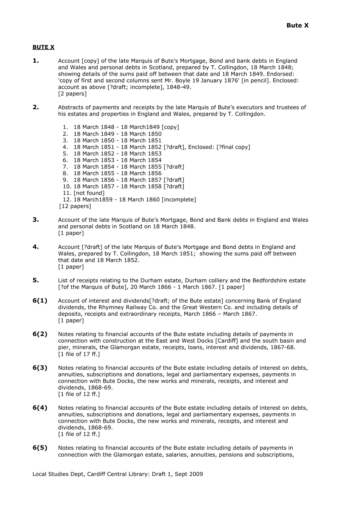

GHF-CCL-20261023-A2 not found
Bute X: property accounts, Manuscript Collection, Central Library, Cardiff: finding aid supplied with the reply on Bute X.6(12)

Transcript
Bute X
Local Studies Dept, Cardiff Central Library: Draft 1, Sept 2009
BUTE X
1.
Account [copy] of the late Marquis of Bute’s Mortgage, Bond and bank debts in England
and Wales and personal debts in Scotland, prepared by T. Collingdon, 18 March 1848;
showing details of the sums paid off between that date and 18 March 1849. Endorsed:
'copy of first and second columns sent Mr. Boyle 19 January 1876' [in pencil]. Enclosed:
account as above [?draft; incomplete], 1848-49.
[2 papers]
2.
Abstracts of payments and receipts by the late Marquis of Bute’s executors and trustees of
his estates and properties in England and Wales, prepared by T. Collingdon.
1. 18 March 1848 - 18 March1849 [copy]
2. 18 March 1849 - 18 March 1850
3. 18 March 1850 - 18 March 1851
4. 18 March 1851 - 18 March 1852 [?draft], Enclosed: [?final copy]
5. 18 March 1852 - 18 March 1853
6. 18 March 1853 - 18 March 1854
7. 18 March 1854 - 18 March 1855 [?draft]
8. 18 March 1855 - 18 March 1856
9. 18 March 1856 - 18 March 1857 [?draft]
10. 18 March 1857 - 18 March 1858 [?draft]
11. [not found]
12. 18 March1859 - 18 March 1860 [incomplete]
[12 papers]
3. Read more
Account of the late Marquis of Bute’s Mortgage, Bond and Bank debts in England and Wales and personal debts in Scotland on 18 March 1848. [1 paper] 4. Account [?draft] of the late Marquis of Bute’s Mortgage and Bond debts in England and Wales, prepared by T. Collingdon, 18 March 1851; showing the sums paid off between that date and 18 March 1852. [1 paper] 5. List of receipts relating to the Durham estate, Durham colliery and the Bedfordshire estate [?of the Marquis of Bute], 20 March 1866 - 1 March 1867. [1 paper] 6(1) Account of interest and dividends[?draft; of the Bute estate] concerning Bank of England dividends, the Rhymney Railway Co. and the Great Western Co. and including details of deposits, receipts and extraordinary receipts, March 1866 – March 1867. [1 paper] 6(2) Notes relating to financial accounts of the Bute estate including details of payments in connection with construction at the East and West Docks [Cardiff] and the south basin and pier, minerals, the Glamorgan estate, receipts, loans, interest and dividends, 1867-68. [1 file of 17 ff.] 6(3) Notes relating to financial accounts of the Bute estate including details of interest on debts, annuities, subscriptions and donations, legal and parliamentary expenses, payments in connection with Bute Docks, the new works and minerals, receipts, and interest and dividends, 1868-69. [1 file of 12 ff.] 6(4) Notes relating to financial accounts of the Bute estate including details of interest on debts, annuities, subscriptions and donations, legal and parliamentary expenses, payments in connection with Bute Docks, the new works and minerals, receipts, and interest and dividends, 1868-69. [1 file of 12 ff.] 6(5) Notes relating to financial accounts of the Bute estate including details of payments in connection with the Glamorgan estate, salaries, annuities, pensions and subscriptions, Bute X Local Studies Dept, Cardiff Central Library: Draft 1, Sept 2009 interest on debts, interest and dividends and the Bute Docks, 1870. [1 file of 10 ff.] 6(6) Abstract of payments and receipts by the trustees of the Marquis of Bute’s Glamorgan and other properties, 1871. [1 paper]. 6(7) Abstracts of payments and receipts by the trustees of the Marquis of Bute's properties, 1872 6(8) Abstracts of payments and receipts by the trustees of the Marquis of Bute's properties, 1873 6(9) Abstracts of payments and receipts by the trustees of the Marquis of Bute's properties, 1874 6(10) Abstracts of payments and receipts by the trustees of the Marquis of Bute's properties, 1875 6(11) Abstracts of payments and receipts by the trustees of the Marquis of Bute's properties, 1876 (copy) 6(12) Abstracts of payments and receipts by the trustees of the Marquis of Bute's properties, 1877 (copy) 6(13) General account of the Bute estates including abstract of payments and receipts by the trustees of the Marquis of Bute’s properties, 1878. [2 papers] 6(14/15) Abstracts of payments and receipts by the trustees of the Marquis of Bute’s properties for 1879 and 1880. [2 papers] 7. Notes relating to financial accounts of the Bute estate including details of payments made in connection with the Bute docks, the Durham and Bedfordshire estates, annuities, salaries, insurances and subscriptions, 1851-52. [1 file of 10 ff.] 8. Memorandum of Agreement [? copy; incomplete; parties unknown] concerning the hire of colliers to cut, work and fill at 1s. 4d. per 2640 lbs. of clean large coal, n. d. [?c.1850]. Endorsed: pencil sketch of unidentifiable subject bearing the words 'too great depth'. [1 paper; printed] 9. Letter from Rob. Bald of 14 Albany Street, Edinburgh, [mining engineer], to the Marquis of Bute, concerning the settlement of his account, 25 Dec 1845. Enclosed: account of money owed and paid by the Marquis of Bute for the services of Rob. Bald, mining engineer, in connection with the iron trade, September 1836 – December 1845. [2 papers] 10. Estimate of supposed expenses and receipts relating to the Bute Glamorgan estate, for the six months ending July 1846. Appended: letter [copy] from T. Collingdon at Mountstuart [Buteshire] to J.S. Corbett, Esq., concerning the estimate of supposed expenses and receipt and mentioning an advance of £400, 5 Feb 1846. Note stating that Mr. Corbett will be able to carry on the business of the estate upon receiving £400 in the course of the next three months which he will repay prior to the July audit if he receives the whole of the sum mentioned in the estimate. [1 paper] 11. Misc. bills, vouchers, receipts, accounts and papers relating to the Bute Glamorgan estate accounts, including bills and receipts in connection with estate maintenance, food and accommodation and carriage hire and repairs, bills of labour and accounts of Tho. Thomas, 1775-1847. Also: account of £1 11s. 6d. wages paid to Jas. Crew for work at Luton Woods Bute X Local Studies Dept, Cardiff Central Library: Draft 1, Sept 2009 (co. Beds.), 19 Jan 1796. Also: memorandum of Mr. Stephenson relative to his employment under Lord Cardiff, May 1782.Letter [in French] from Ca[illegible]inire Ortega in Madrid to Lady[Bute], 8 March 1798. Apologies for his long silence, and thanks her for her kindness in continuing to communicate with him. Discusses matters relating to a mutual interest in botany and, in particular, plant species on the Coromandel coast, enclosing catalogue of ericas [enclosure missing] and mentioning that he is sending her further catalogues and publications. Also mentions his recent illness, the death of his superior Mr. De Galimoga, the frequent changes of government [?in Spain] and his efforts to become recognised in Spain as a doctor. [1 bdle. of 93 papers] 9 items acc.D28.49 (MS). 1 item acc.D13.50(MS) 12. Account [includes detailed report of activities; two copies] of money owed by the Marquis of Bute to Dav. Stewart in connection with the disputes with the Dowlais Co., 1819 - July1825. Also: account [includes detailed report of activities] of money owed by the Marquis of Bute to Dav. Stewart in connection with manorial evidence and disputed properties, Aug.1819 – June 1823. D28.49 (MS). Account [includes daily report of activities] of money owed by the Marquis of Bute to Dav. Stewart in connection with Mr. Bald’s mineral survey, February 1822 - June 1825. Appended: marginal notes [made by ?,on behalf of Lord Bute] and initialled by [?Lord] B[ute] at Glasgow, 9 October 1826. [1 file of 14ff., 1 file of 12ff., 1 file of 10 ff. and 1 file of 8 ff.] 13(1) Bills, vouchers, receipts and accounts of the Marquis of Bute relating to his Glamorgan estate including: bills and receipts concerning donations, subscriptions, Christmas charity, rents, parish rates, the upkeep of Cardiff Castle, the Cardiff School Foundation, the Llantrisant School Foundation and election expenses; bills from E. P. Richards, agent to Lord Bute, and weekly pay bills of labourers employed at Cardiff, July 1929 - Dec 1831. [1 bundle of 102 papers] D30.49 (MS).Voucher 43:D30.49 (MS). Unnumbered voucher receipt for Mary French for donation of £5 D30.49 (MS). Voucher no 2, 1831 – rates 'Lequeth Moors' D30.49 (MS). Voucher no 110, 1831 – D. Richards £1/8/9 D30.49 (MS). Weekly pay bill, labourers 27/8/1831 D30.49 (MS). Weekly pay bill, labourers 12/11/1831 D30.49 (MS). Voucher 92, 1831 Cardiff School D30.49 (MS). 13(2) Bills, vouchers, receipts and accounts of the Marquis of Bute relating to his Glamorgan estate including: bills and receipts relating to parish rates, taxes, annuities, subscriptions, donations, rents, the Cardiff School Foundation, Llantrisant School Foundation, the running and upkeep of Cardiff Castle and improvements on Llandough Farm; weekly pay bills for labourers employed at Cardiff and letters requesting money for people in need, January - July 1832. [1 bdle. of 108 papers] D31.49 (MS) 13(3) Bills , vouchers, receipts and accounts of the Marquis of Bute relating to his Glamorgan estate including: bills and receipts in connection with Rhydypenna Farm, subscriptions, building and repairs on the estate and the Bute Ship Canal, June-December 1833. [1 bdle. of 46 papers] D32.49 (MS) 13(4) Bills, vouchers, receipts and accounts of the Marquis of Bute relating to his Glamorgan estates including: bills and receipts in connection with building and repairs on the estate, subscriptions, Rhydypenna farm, woods and plantations, management expenses and the Bute Ship Canal, January 1834 – September 1835. [1 bundle of 106 papers] D33.49 (MS) 14. Bills, vouchers, receipts and accounts of the Marquis of Bute relating to his estates in Bedfordshire and Glamorgan, including: bills from E. P. Richards [agent to Lord Bute]; accounts of payments made by T. Collingdon for the Bute Docks; bills for supplies for estate maintenance; day bills for Cardiff Castle, and bill from Griffith Phillips, druggist, 1794-1854. [1 bundle of 21 papers,( D34.49 (MS) D253.51(MS) 5 files each of 2 ff., 3 files each of 3 ff., and 1 file of 8 ff.( D29.49 (MS)] 15(1) Bills and receipts of the Earl of Bute including: bills for accommodation and food and receipts for payment of wages, annuities, subscriptions and supplies for estate maintenance, 1792-1848. Also: four receipts of Jas. Stewart Mackenzie, 1790. Three Bute X Local Studies Dept, Cardiff Central Library: Draft 1, Sept 2009 receipts of Lady Windsor, 1769-70. [1 bundle of 137 papers] D253.51 (MS) 15(2) Accounts, bills and receipts of the Marquis of Bute relating to T. Collingdon’s account [nos. 2-115; incomplete] [agent to Lord Bute], including letters requesting charitable donations, 1847-48. [1 bundle of 75 papers]. Also: bills, vouchers, accounts and receipts relating to the Bute estate in Glamorgan including: bills and receipts for furniture, repairs and upkeep of observatory, masonry work, pensions, estate repairs and maintenance, labour and food, 1778-1877. Hanchford’s rent roll for lands in the parishes of Reigate and Buckland (co. Surrey), 1704. [1 bundle of 72 papers] D253.51 (MS)
Artifact description
Confirms Bute X.6(12) is still held; staff looked and could not find information about the property; manuscript index showed no matches; scan only via Glamorgan Archives at a cost; detailed research would carry a charge; offers an in-person visit. Two Bute catalogues attached.
| Catalogue ID | GHF-CCL-20261023-A2 |
|---|---|
| What it is | PDF document from Cardiff Central Library. Attached to an email received on 23 October 2026, their reference Bute X.6(12). 4 pages. |
| From | Cardiff Central Library |
| Email received | 23 October 2026 |
| Their reference | Bute X.6(12) |
| Pages | 4 |
| File | Bute 10 - Propery accounts.pdf (42 KB) |
| State | Read |
Our integration
Part of the records enquiry thread with Cardiff Central Library opened 10 October 2026. The thread's standing classification is “not held”. Statutory time: no statutory deadline.
Concern to test: whether this reply answers the question as asked, or a narrower one. Not checked against the original request wording here.
What cuts against the case: a nil return is common for records of this age and is evidence of absence only if the search was adequate; nothing here shows a record was kept back.
Working-theory relevance · 29 October 2026: The property-accounts finding aid may help locate accounting records relevant to Bute transactions, rent and the reported end of quarrying. It is not itself a land conveyance and cannot establish a parcel boundary or legal title. Any theory-level significance depends on the actual account pages, exact entry, dates, amounts and land descriptions; the index result must be retained even if no matching account is found. Theory and test schedule.
Related: GHF-CCL-20261023-A1 — Calendar of Bute Documents I–XLI, Manuscript Collection, Central Library, Cardiff: finding aid supplied with the reply on Bute X.6(12) · The covering email · What They Don’t Say: WTDS-0f796e05-1 · EV-0341 in the evidence catalogue · Timeline · Disclosure Dartboard